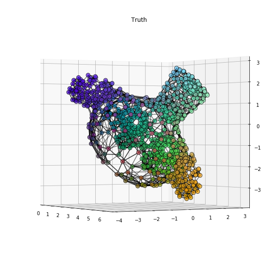
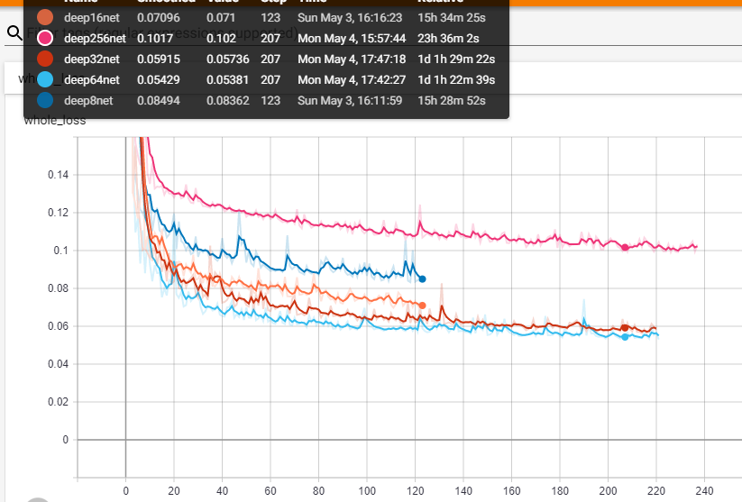
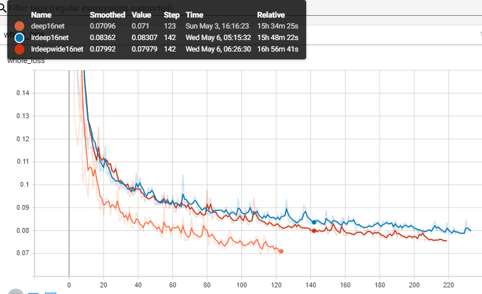

Checkpoint 4: Monkey
description here (normalized)

Monkey with k8 nearest neighbors
K nearest neighbor
Specs:
- Layer: 4-64-64-64-64-3
- Activation: Leakyrelu
- Loss: MSE + MAE
- Conv: GCNconv
- data: monkey and more meshes!
- k-n: Input graph has edges between node's n nearest neighbour spatially (each node has n edges)

Loss
Observations
Gallery
GCN
k8
k16_1
k16_2
k32
k64
k256
Wider and down learning rate
Specs:
- Layersize: wide:128
- Activation: Leakyrelu
- Loss: MSE + MAE
- Conv: GCNconv
- lr: 0.01 => 0.001

Loss
widelr
SAGEconv
Specs:
- Layersize: wide:128
- Activation: Leakyrelu
- Loss: MSE + MAE
- Conv: SAGEconv w/ mean
- lr:0.001